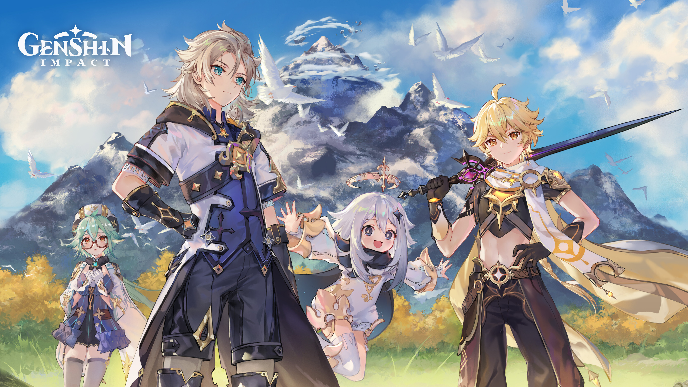
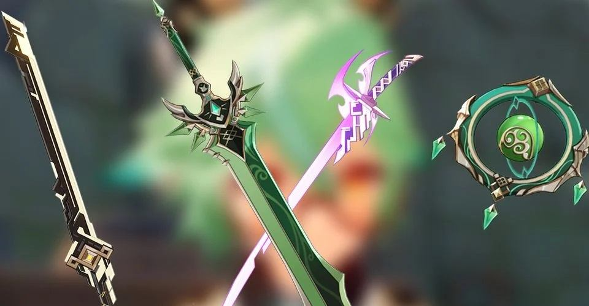
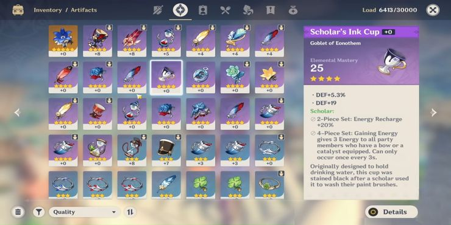
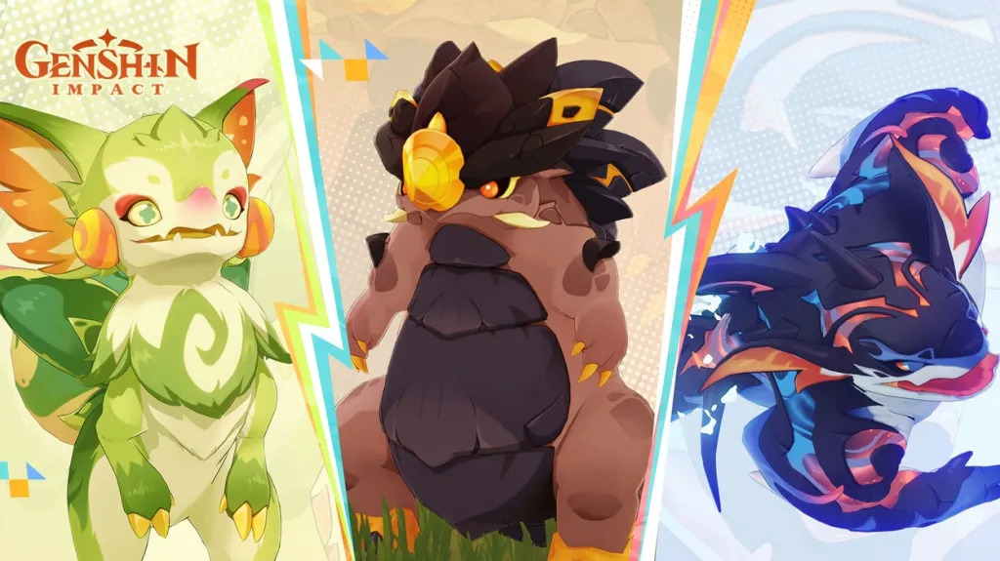
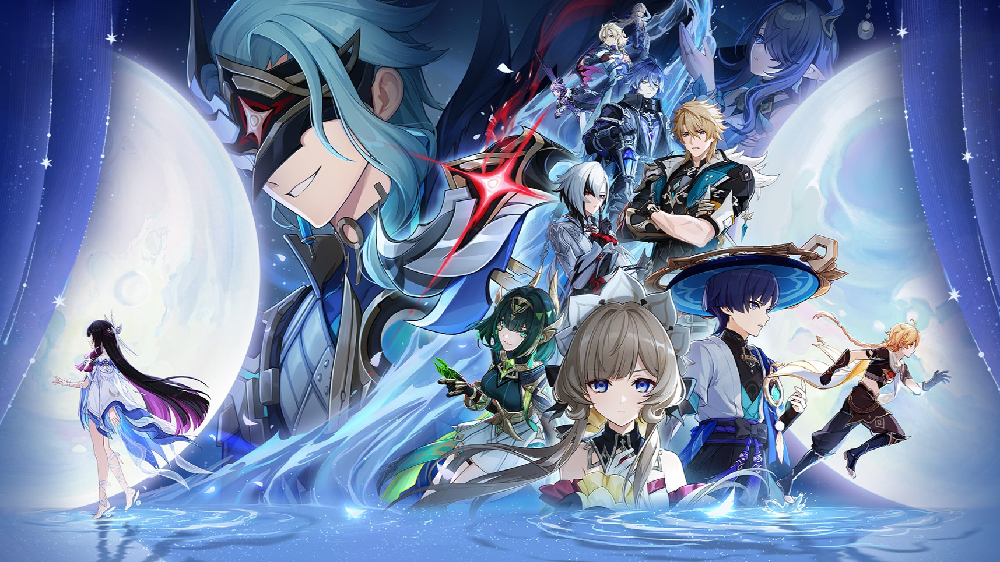

Personajes

Cada guerrero en Teyvat es único. En esta sección, analizamos a fondo a cada
personaje para que sepas exactamente cómo equiparlos. Descubre sus mejores
roles, las habilidades que debes priorizar y las sinergias elementales que
harán que tu equipo sea imparable en cualquier desafío.
conocer más
Armas

No todas las armas funcionan igual para todos los personajes. En esta sección
analizamos el catálogo completo de Teyvat: desde las legendarias de 5 estrellas
hasta las joyas ocultas de 4 estrellas y forja. Compara estadísticas base,
efectos pasivos y descubre cuál es la mejor opción para maximizar el daño o
la utilidad de tu equipo.
conocer más
Artefactos

Un buen set puede duplicar el daño de tu personaje. En esta sección
analizamos cada conjunto de artefactos, sus bonos de 2 y 4 piezas, y
cuáles son las piezas clave que debes buscar.
conocer más
Mob No Hostiles

Desde las gráciles grullas de Liyue hasta los zorros de las nieves en
Espinadragón. Aquí catalogamos a los seres que no buscan pelea, pero
que son vitales para tu progreso. Aprende sus ubicaciones, comportamientos
y cómo recolectar materiales esenciales sin que escapen antes de que los alcances.
Conocer más
Mobs hostiles

Si quieres mejorar tus armas y talentos, tendrás que enfrentarte a los
peligros del mundo abierto. Aquí clasificamos a los mobs hostiles por su
nivel de amenaza y tipo de daño. Descubre las mejores tácticas para romper
sus escudos y las rutas de farmeo más eficientes para conseguir los materiales
que tu equipo necesita.
Conocer más
Builds

¿Quieres que tu personaje sea un atacante principal o un soporte imparable?
Aquí exploramos las distintas formas de buildear a cada guerrero de Teyvat.
Te mostramos las combinaciones de armas y artefactos que mejor se adaptan a
tu forma de jugar, junto con los equipos recomendados para activar las mejores
reacciones elementales.
Conocer más